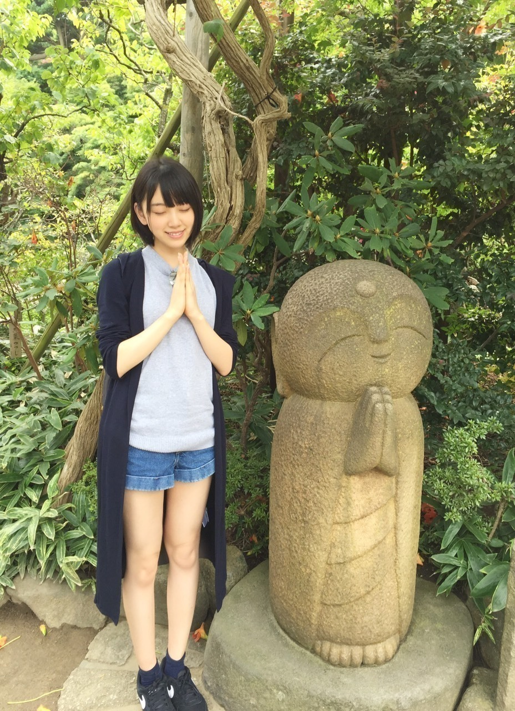

2015/0907Mon金木犀の秋探し
ペットボトルのお茶のラベルに
書いてある色んな人が投稿した
季節の俳句をついつい見てしまう
堀未央奈です♪
ライブが終わり、5日間の夏休み。
私は中学からの親友と2人で
ディズニー、鎌倉、江ノ島に
行ってきました！
鎌倉、江ノ島は
海街diaryを観て
また行きたくなり人生2回目。
極楽寺駅、長谷寺、鎌倉大仏...
次は桜が満開の季節に行きたいなぁ
あとは"食"
カツ丼
定食屋しゃもじのお刺身定食
パンケーキ
ステーキ
江ノ島バーガー...
沢山食べた♪♪
お寺や駅に沢山行きました
はせ を ながたに
としばらく呼んでいて江ノ電の中で
ながたに駅が〜
と話してました。
言い間違いは恥ずかしいのう
1日乗車券【のりおりくん】
お得でした！ありがとう´∩ω∩`♡
海の近くに行ってもこうやって
お茶したり遠くから海を見るのが好き。
中学生以来、遊びで海に行ったり
プールも学校の授業以外行かなかったから
いつか大人になったら
実際に泳いでみたいなぁ。
まずは泳げるようにならないと...笑
その前日にはディズニーへ♪
私が原宿の古着屋で買ってきた大きめの
パーカーをお揃いで着て行きました。
乗り物の中でもスプラッシュマウンテンと
スペースマウンテンが未だに怖くて
スプラッシュで、落ちる時に
横を向くと怖くないよ！って私が
横を向いてつられて友達も横を向いて
よく分からない写真になりました。笑
やっぱり私はプーさんのハニーハントが
1番好きです
はちみつの良い香りがするし
ティガーと一緒に跳ねるのも大好き！
今は凄くカリフォルニアの
ディズニーワールドに行きたい気分。
玲奈さん詳しいから色々聞いてみようっ
かりんとパリのディズニーに
行く約束もして
楽しみな事が増えました^_^
この休暇で中学からずっと一緒にいた
親友と久しぶりに会って
話したり笑ったりできて幸せでした。
お互い夢に向かって
頑張ろうね！
よし、9月ももう半ば。
年末まで全力で駆け抜けるぞ〜^o^

そして私の生誕Tシャツが完成！
手書きで自画像を描いたよ〜♪
初心を忘れない。という意味を込めて
初めて選抜に入って作っていただいた
バレッタの衣装
猫目、富士山型唇、情けないたれ眉毛
前下がりショートヘア
左手はライブ中手を振る様子...
私なりに「私」を一生懸命
書きました(*･ω･)ノ
着てくださったら嬉しいです
告知
◎かとうれいさんの画集「girl friend」
◎StreetJACK 10月号
◎B.L.T. 10月号
9/15 EX大衆発売
9/17 週間プレイボーイ発売
◎毎週日曜日 0:00〜
【乃木坂工事中】
◎毎週金曜日 24:12〜
【初森ベマーズ】
【初森ベマーズ】
◎毎週月曜 25:29〜
【NOGIBINGO!5】
コメント返し
◎ゆーやさん
いやいや(´；ω；｀)
◎生井嵐さん
私もパジャマ着るからお揃いやね♪
◎わたるさん
うちわ見つけました！ありがとう♡
◎タイヤのAさん
嬉しいです^o^頑張ります！
◎パプマンさん
thank you♡
◎もっと強くかっこよくできるように
お勉強します...！
今は長いけどまた伸ばす時も
あるとおもう(*･ω･)ノサンタ着るよん！
以上
そして、アンダーライブ4rd開催が
決定しました！
日付 10.15〜10.25
場所 AiiA 2.5 Theater Tokyo
初めてのアンダーライブで
センターをやらせていただきます。
引っ張っていきたいというよりかは
自然と任せてもらえるように私自身が
頑張らなくちゃいけないなと思います。
まだ不安な気持ちもありますが
今までアンダーライブを幾つか観に行って
メンバーのパフォーマンスや表情に
魅力されたり元気を貰ったり
アイドルになりたい。って思うきっかけ
となった初心の気持ちを思い出したりと
凄くパワーを貰いました
なので私も今回のアンダーライブを
良いものにできるように全員で
力を合わせて頑張りたいと思います！
皆さん是非、見に来て下さい！
ではでは
おやすみおな(_ _).｡o○
2015/09/07 21:36


コメント(830)
海街Diaryは良かったね＼(^o^)／
カマドウマとか(*￣ω￣)ノ笑
お疲れ様！
休暇リフレッシュできたみたいやね^ ^
よかったよかった！
俺の夏休みは仙台にLIVE観に行って！牛タン嫌っていうほど食べて仙台から帰ってきた次の日から家族と親戚とで静岡に旅行行って鰻食べてサファリパークで動物と戯れたぐらいかな^ ^
生誕Tシャツ申し込んだけど着るのもったいないと思ってしまうタイプやから大切に保管しとく^_^;笑
アンダーLIVEは当たるかわからんけど行きたい！！って気持ちはめっちゃある！！笑
未央奈センターやし見届けたい^ ^
当たれーーーーーーー！！！
これから稽古とかで大変になるやろうけど頑張ってね！
体だけは大事にね^ ^
大学にも来てくぞー！
さっきね、「未央奈の推しどこ」と「未央奈の生誕Tシャツ」と「アンダーライブ」ポチッてしまった〜*\(^o^)/*
楽しみの予定があると仕事へのモチベーションが上がるなぁ✨
全国ツアーお疲れ様
無事に終わって良かったね
アンダーライブ
センター頑張ってね
武道館も決まって良かった
鎌倉リフレッシュ出来て
良かったね
元気そうにしてくれて
安心したよ
もしかしたら元気無いかも
しれないけど
力になれないかも
しれないけど
応援してるから
ブログ更新ありがとう
江ノ島いいですねー！結構家から近いので行ったりします(`・ω・)ｂｸﾞｯ!
神宮が終わってまだ余韻が残ってます(笑
受験生ですがアンダーライブは１回くらいは参戦しようかなと思ってるよー！
２期生推しだから全力で応援しないと！！！楽しみにしてるよー！！
あと１時間でノギビンゴだー！楽しみです
みおなは最近悩み事はありますか？悩み事がある時にどんなことをしますか？
僕は悩み事を抱えた時必ず解消法を考えるのですが思いつきません(；´・ω・)
でわでわおやすみおな☺
休み満喫出来たんだね！！
よかったね！！
アンダーライブ決まったね！！
ここでどんどんいろいろ学んできてね！！
そしてもっとすごくなったみおな見せたれ！！笑笑
高３が調子乗りました笑笑
最高に楽しかったよ！
アンダーライブ
楽しみにしてます( •ㅈ• )
乃木坂のことあまり知らない友達に
最近乃木坂のことを教えてて、
少しずつハマってきたんだけど
推しメンは未央奈らしい！
未央奈のおかげで俺の周りに
乃木坂ファンが1人増えました！
旅行をして旅行記を書くのが好きで、
また他の人の旅行記を読むことも好きです。
みおなの旅行記はいろいろ役に立つと思います。
(ぜひ食べて見なければならない食べ物など)
.
.
.
初めてみおな誕生日記念Ｔシャツは少し驚いたし、面白いと思われます。
やはり深い意味が込められていますね。
そして、
アンダーライブ
楽しみにしてます。
.
.
.
秋の夜
常に良い熟睡することを願って。
健康気をつけてね。
生誕祭に着ていきます
堀ちゃんの意気込み聞いて更にアンダーライブ行きたくなった
写真のポーズ面白い
今週末の全握行きまーす
5日間の夏休みがあったのね！ ディズニーとか江ノ島いいやんか！ なんか若者って感じ！笑
大人数じゃなくて2人ってのもゆっくり出来るからいいね！（＾Ｏ＾） 良い休暇になったみたいで良かったです〜
最近は受験勉強で気持ちが重たい時があります
どうしたら前向きになれますか？？(´･-･`)
当たるって信じてる(T . T)
今すごく未央奈ちゃんに会いたいんだ。。
真夏の全国ツアーお疲れ様でした！
次はアンダーライブだね。初日が10月15日というのもゲンが良いね。頑張ってね！
13thの個握には久し振りに未央奈ちゃんの列に並ぼうと思うのでよろしくね！(同じ誕生日のおじさんを覚えていてくれているかな？)
アンダーライブ、全力で駆け抜けてね。堀ちゃんの生誕の日の数日後は、弟が誕生日(乃木坂46の
ファン)で10月は私達の家族にとって、忘れられない月です。生誕Tシャツをチェックしたいですね。
シーのセンター•オブ•ジ•アースとまってたんですよ…なかなか行く機会ないのに悲しいですね…
ディズニーの絶叫アトラクションはユニバで慣れてるからなのかちょっと物足りなかったですね〜
ビッグサンダーマウンテンの頂上っぽいとこの時にちょうどパレード中で花火が見えて綺麗でしたよ！
良かったらパレード中にビッグサンダーマウンテン乗ってみてください！
全ツのみおなかっこよかった！
これからもっと活躍することを心から願ってます！
鎌倉、江の島、ええですなぁ。
江ノ電とか、サザンの曲が自然と頭に流れて、夏って思うね。
私、名古屋人ですが、神奈川（横浜・鎌倉）大好きです。
スプラッシュマウンテンは、思いっきり伏せていれば大丈夫だよ。なんにも見えないけど！
あと、みんな書いてると思うけど、４ｒｄではなく、４ｔｈが正解だね。
１ｓｔ（ファースト）、２ｎｄ（セカンド）、３ｒｄ（サード）
４ｔｈ（フォース）、５ｔｈ（フィフス）６ｔｈ（シックス）・・・・・ってなりますよ！意味は「～～番目の」ってことですなぁ。
じゃ、アンダラがんばって！
因みに私が一番好きな乃木坂の曲はバレッタです！
初コメです♡♡
お茶のラベルの俳句を読んでるって
すごい共感してコメントしたよ(﹡´◡`﹡ )ｗ
ついつい読んじゃうよね！！
みおなちゃんがんばれ♡♡
可愛いイメージから、綺麗なイメージになった気がします(^^)／
元からか～♪
やっぱり堀ちゃんの私服大好きです！！スタイルも良くて憧れます！！
アンダーライブ行きたかったな。がんばってください！
夏休み楽しかったようでよかったね！
俺も真夏の全国ツアーや、今週の全国握手会がすごい楽しみです！もちろん、みおなのれーんいきますよ！
誕生日も来月だね！俺もみおなと誕生日同じの10月15日だから、すごい楽しみだし、ワクワクしてます！全国握手会めっちゃ楽しみ！覚えててね
5日間のお休み！
リフレッシュやね(‐ω‐)
楽しそうな感じとか、未央奈の「好き！」加減が
こっちまで伝わってきたよ笑
アンダーライブ楽しみ！
行けるよう、チケットが当たることを、祈るばかりです…笑
年末まで、やることギュッと詰まった感じやね。
これからも応援していくよ！
ではでは〜
ねこさんでした。
初コメだー！
アンダラあたるといいなぁー！
楽しみにしとくー！
未央奈こんばんふぁむ！
神宮ライブから一週間が経って関東の握手会が今週にあるね！！
楽しみですν(＞ｪ＜)bｲｪｲ!!
それと生誕Ｔシャツ買ったよ！！
10月の初日のアンダラに間に合えば着ていくね！
当選すればの話だけど（笑）
いや、当てて行く！✧＼\ ٩( 'ω' )و /／✧
ｳｫｫｫｫｫꉂ(σ▰˃̶̀ꇴ˂̶́)σ✧
さてと、早く寝ないと
おやすみふぁむ！( ˘ω˘ )ｽﾔｧ…
アンダーライブ武道館も二日間見に行く♪
ミオナの応援してます。
今度、全国握手会も行くからよろしくね♪
夏休み、数日でもゆっくりできてよかった
江ノ島バーガーちょっと食べてみたい！
僕の地元にも「THIS IS THE BURGER」ってハンバーガー屋さんがあって、めちゃオススメだよ
映画のロケにも使われたりして
念願の江ノ電にも乗れて、駅も色々行けてよかったね
長谷はふつう読めないからねー(笑)
小さい頃何度か行ってるけど、読めなかった記憶が…
僕も夏にしらすトースト食べに行ってみたかったけど、混んでるだろうし、と思ってまだ行けてない
未央奈の胃袋は何で出来ているんかな！？
未央奈の満腹中枢すごい
しゃもじのお刺身定食行ってみたい！！
名前からして気になる
未央奈ー！江ノ島の海は楽しいよ！！
来年ぜひ
僕もプーさんのハニーハントが１番好き
生誕Tシャツ２着買った
俗にいう衝動買いというやつです
１着は握手会のイベントに
もう１着はパジャマにします
未央奈ってボブになってからお地蔵さんに似てるよね
僕はお坊さんに似てるって言われたことがあります
ナイキの黒のスニーカー履いてるとこはじめてみた！！
未央奈男の子みたいでカッコいいね
僕もナイキ気になってて、でもSmartの未央奈のページにスニーカー載ってなかったから、また探してみる…
気になる木
たいめし。
友達が鎌倉住みで最寄りが極楽寺駅だからいつも居る場所に未央奈ちゃんがいてちょっと感動(笑)
生しらす丼が美味しいから今度訪れたときは食べてみて！
ランドも行ったんだね！うちもランドで一番ハニーハントが好きなんだよ！！同じで嬉しい！今度の握手会でこの話しよ♪笑
玲奈さんとは前に行ってたよね！ディズニーも好きなんて玲奈さん多趣味だなぁ〜。
パリのディズニーはピンクらしいから私も行ってみたいです♪
アンダーライブ行くよ！未央奈ちゃんが楽しめていればそれでいいと思うよ。気負わずにみんなで魅せて下さい。
それでは、またお仕事頑張ってね(*^^*)
夏休み満喫できてよかったね!
リフレッシュできたみたいでよかった(^-^)
私もいつか友達と旅行とか行きたいな～
アンダーライブがんばってね!
見には行けないけど応援してるよ(*´`)
明日からもfight!!
堂々とセンターに立つ姿はとても頼もしかったです。
きっとアンダーライブも素晴らしいものになると期待してます♪
あまり気負わず、自然体で楽しんでね！
必ず観に行きます！
中学の親友とのお出掛けでリラックスできたかな？
親友と呼べる人の存在、大切にしてね！
なかなかゆっくりできないかもしれないけど、疲れを癒してね！
また握手会などで会えるのを楽しみにしてます♪
ホーリーお疲れ様！
鎌倉行ったことない・・・楽しそう・・・行きたい！！
神宮は日曜日と月曜日行ったよ！！
ＥブロックとＧブロック！
アンダーライブ絶対行くよ、武道館も！
後、ホーリー！！自分自身が楽しんでやりなよ！自分が心の底から楽しんで喜んでないでやっても意味ないからね、ファンは全力で応援するよ！頑張れ！
ファンはそれ以上のものをもらっているよ、突き進めーーーー！！！
あと4rdじゃなくて4thやで！
夏休みは、満喫できたみたいだね。
真夏の全国ツアーの後だから、
ゆっくりするのかと思ったら、
大好きな場所で、
いっぱい楽しんだみたいでよかったよー。
パンケーキ持ってる未央奈は
とってもかわいいよ。
駅の看板で、ポーズをとってる未央奈は、
クールビューティーって感じだね。
お地蔵さんと同じ表情で、
同じポーズの未央奈は、
みんなを幸せに導いていきそうで、
素晴らしい表情だよ。
ツーショットの未央奈も、
白が似合ってて
とってもキュートだね。
生誕Tシャツは、
未央奈らしさが
いっぱい表現されてていいよね。
アンダーライブは、
未央奈センターだから、
絶対にチケットを何回か取りたいよー。
未央奈をいっぱい応援するからねー。
でも、AiiA Theaterは小さいから心配。。
未央奈を中心に、
2期生やアンダーのメンバーみんなが
全力で頑張って、それぞれが個性を発揮できる
ステージになるといいね。
未央奈、頑張ってねー。
最高のアンダーライブにしていってねー。
今週末は、久々の関東での握手会だね。
やっと、かわいい未央奈にまた会えるね。
そういえば、地中海のバレッタで買った
バレッタって書いてあるマグカップを
受付に渡しておくね。
では、週末は未央奈に会えるのを
とっても楽しみにしてるよー。
未央奈！大好きな鎌倉、江ノ島に行けて良かったね！
みおなの八の字眉毛、すきだよ。末広がり。
アンダーライブ4thに武道館公演、楽しみにしてるからね！がんばれ！
初乃木坂ライブの神宮でみおなぁ⤴︎に初めて会い、
心打たれた一人です。
同じ岐阜人としてこれからも応援してます。
渋いもの、古いものに関心があるようで素晴らしい。
古民家に感じ入ったり、初めて食べたところてんを素直に美味しいと言えたり。
鎌倉•江ノ島がお気に入りになったのは、確か「気づいたら片想い」の撮影で行かれてからでしたね。
そこで今回お勧めなのですが、西岸良平さんの名作漫画「鎌倉ものがたり」をご存知でしょうか。
もしまだ読んだことがなかったら、文庫で現在21巻まで出ているロングセラーの第1巻を読んでもらいたいです。
未央奈さんのお好きなゾンビならぬ、鎌倉の魔物が出て来るホラー&推理の良質なファンタジー作品です。
毎回読み切りの短編集ですので、お仕事の移動の時や、コンサートで疲れた時のリフレッシュ、暫く鎌倉に行けない時などにもってこいですよ。
いつか読んで頂けた時には、一言感想などアップしてくれたら嬉しいです。
では季節の変わり目ですので、体調に気を付けて、美味しいものを沢山食べて、またコメントして下さいね。毎回楽しみにしています。
4thアンダーライブも頑張って
4rdじゃなくて4thです。
1st,2nd,3rd,そして他はth。
11th,12th,13th以外、○1,○2,○3は○st,○nd,○rd
例）21st,22nd,23rd,31st,32nd,...
ちゃんと勉強して。笑
今後も頑張って
-ドイツに住んでいますのドイツ出身より
未央奈を観にアンダーライブ行きます(o^^o)！
楽しみ♪♪
今日も一日お疲れ様！
未央奈ちゃんのこうゆうブログ大好きです！
鎌倉・江の島は何回行っても楽しいかも。もちろんディズニーも！
行く機会があったらお刺身定食を食べてみようと思います。それにしてもたくさん今回もたくさん食べましたねぇ(∩´∀｀)∩
p.s.
絶叫系は落ちると同時に顔を下に向けるとフワッとした感覚がなくなりますよ！
いつもブログ更新ありがとう☆
これからもブログとかに行ったところの報告してもらえるとすごい参考になります！！笑
アンダラ、応募しました！当選してほしい…！
きっと選抜では得られないものがたくさんあると思います。全力で、でも無理はしないで、未央奈ちゃんのペースで！頑張ってください！
同い年の未央奈ちゃんが頑張る姿みて、自分も刺激もらって頑張ろうって思います。ありがとうございます！
自分も未央奈さんのブログ以前見て、鎌倉行きたくなり、お盆に行きました！自分は、銭洗弁天と、大仏に行きました＼(^o^)／自分も長谷駅最初読めなくて、未央奈さんと同じ、ながたに、とか読んでました笑
オフがすごい、充実してますね（＾◇＾）
神宮球場ライブお疲れ様でした✨今度握手会、行きます！鎌倉のお話したいですね（＾◇＾）
よろしくお願いします。
旅行をして旅行記を書くのが好きで、
また他の人の旅行記を読むことも好きです。
みおなの旅行記はいろいろ役に立つと思います。
(ぜひ食べて見なければならない食べ物など)
.
.
.
初めてみおな誕生日記念Ｔシャツは少し驚いたし、面白いと思われます。
やはり深い意味が込められていますね。
そして、
アンダーライブ
楽しみにしてます。
.
.
.
秋の夜
常に良い熟睡することを願って。
健康気をつけてね。
鎌倉は近くてイイトコ～だよね。
アンダーライブぜひ行きたいと思います。
みおなちゃんのセンター期待してますよ。
ああチケット当たると良いなあ( ；∀；)
頑張ってね！応援しています。
それではノシ
コメントする